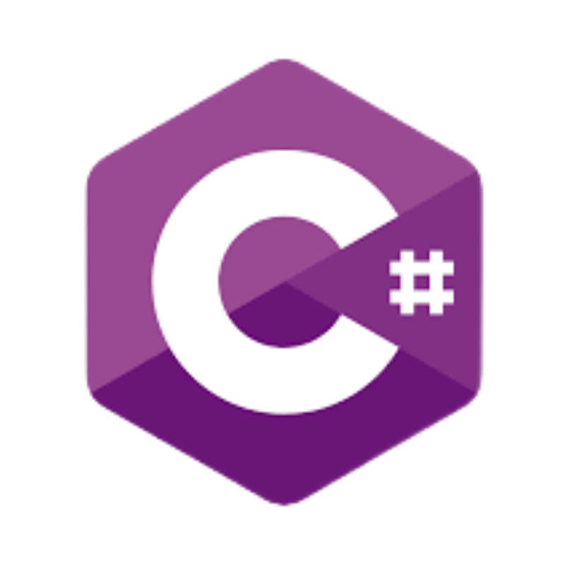
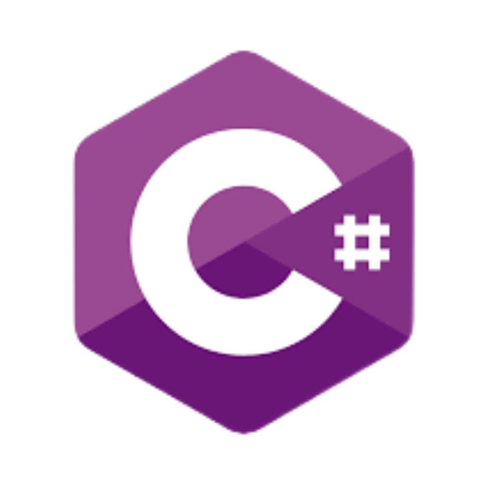

Sokaban
My first python project has developed. Its a Sokaban game, using print statments to simulate the wall
and box. User can navigate / push boxes by pressing button. This is also the first time I get to know
OOP.
GUI Bouncing Program
My first Java program launched. This is my first time learning Java. I get to know another programming
language other than python. It's a GUI boucing programme. People can add different shapes / even shapes
inside a shape. they boucing everywhere within the GUI window.
Feb-Jun, 2022
MySQL
Enrolled for infosys222 and first time knows about database. The language we were using was SQLlite.
The Music Library
This is online music website. It connect with database and also use flask module. An user can browse
different songs, based on the generic type, the artist and the album type. It has pagination function
and also the comment function.
Jul-Nov, 2022
Web Chest Game
It is an online web chest game. Programming languages HTML, CSS, JS and C# were used. We use C# to build
API and use JS fetch to get information that were post onto those API. We distributed the services
between frontend and backend.
Carbon Easy Website
I have applied the HCI design principle I have learn in the course to build a static website. I have
reinforced my CSS layout and position understanding within this project.
Feb-Jun, 2023
Machine Learning and Large Scale Software Development
Taken 361 machine learning course and 331 large scale software course. Learn the basic knowledge about
machine learning i.e. decision tree, Bayes' theorem, KNN, neuron network.
Online Movie Website (Bootstrap Project)
Learn about Bootstrap frame working. And applied on my move website. The website is responsive. The
basic feature like carousel, dropdown menu are included. I know its not enough, but I still a bit proud
for myself, because this is a framework I learn outside the school and formed this project.
Nov, 2023
My portfolio
I finally launched my personal portfolio. This is a bit late. I thought I could build it easily, but it
takes time and some features were got in my way. I am still very happy despite its imperfectness. I am
studying React Framework. And I will try learning more/deeper about C#, .Net and Java framework like my
Batis,SpringCloud, SpringBoot. I am still on my journey, Let's fighting together!


 
